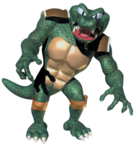
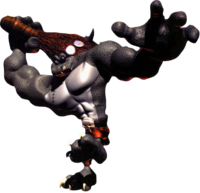

The leader of the Kremlins, King K Rool. A fearsome villain who always has a plan to obtain donkey kongs banana pile or even worse blow up his island. King K Rool isnt just a cliche villain as he tricks the player in his fights and even succesfully kidnaps Donkey Kong making diddy have to go and rescue him. King K Rool is a pirate captain sailing the oceans on his ship and his kremlin crew. He a dangerous cannon gun which fires cannon balls and his sharp crown can be tossed at an incredible force. Watch out for this fearsome croc.

The kritter is the kremlins main force as theire numbers are large enough to invade the DK island. While they might be easy to topple with DK's strength, in numbers they could put up some confusion on the player. You will be seeing alot of varient of the kritter like in DKC2 where the pirate kritters swing around with theire swords and bandanas.

Kudgel is a large and imposing foe who boasts a large club at his side ready to cruch any kong who dares challenge him. The kudgel is a dangerous foe with its large size and club that could easily hit the player, with its deep voice it could send chills into anyones spine. Watch out for this giant kremlin.